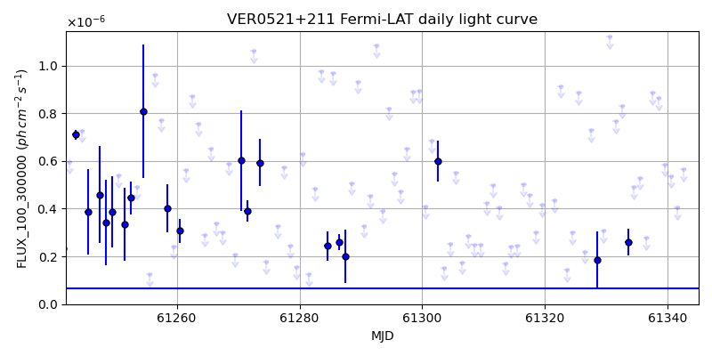
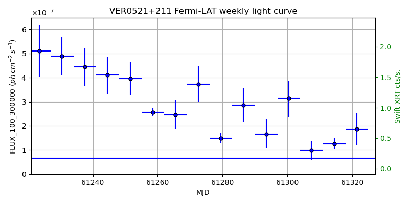
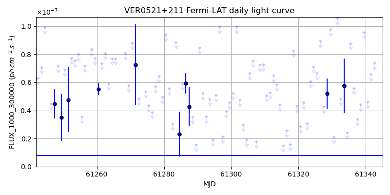
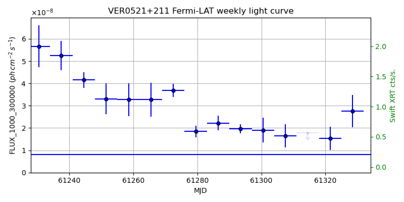

LAT Lightcurve site: https://fermi.gsfc.nasa.gov/ssc/data/access/lat/msl_lc/source/VER_0521p211
NED: Query
Time of last update of this page: UT: 2026-10-30 15:16 (MJD: 61343.636)
| Property | Value |
|---|---|
| R.A. | 5:21:46.08 |
| Dec. | 21:12:50.4 |
| z | 0.108 |
| 3FGL SpectrumType | PowerLaw |
| 3FGL PL Index | 1.92 |
| 3FGL Flux_100_300000 | 6.73e-08 1 / (s cm2) |
| 3FGL Flux_1000_300000 | 8.00e-09 1 / (s cm2) |
| 3FGL Flux >200 GeV | 5.96e-11 1 / (s cm2) |
| 3FGL Extrap. Crab >200 GeV | 0.25 |
| 3FGL Flux After EBL Absorption >200GeV | 3.54e-11 1 / (s cm2) |
| 3FGL EBL Crab Fraction >200GeV | 0.15 |

| MJD | dMJD | Flux | dFlux | Frac3FGL | FracCrab>200GeV | EBLFracCrab>200GeV |
|---|---|---|---|---|---|---|
| 61338.50 | 0.50 | 8.63e-07 | 0.00e+00 | 0.00 | 0.00 | 0.00 |
| 61339.50 | 0.50 | 5.86e-07 | 0.00e+00 | 0.00 | 0.00 | 0.00 |
| 61340.50 | 0.50 | 5.37e-07 | 0.00e+00 | 0.00 | 0.00 | 0.00 |
| 61341.50 | 0.50 | 4.04e-07 | 0.00e+00 | 0.00 | 0.00 | 0.00 |
| 61342.50 | 0.50 | 5.66e-07 | 0.00e+00 | 0.00 | 0.00 | 0.00 |

| MJD | dMJD | Flux | dFlux | Frac3FGL | FracCrab>200GeV | EBLFracCrab>200GeV |
|---|---|---|---|---|---|---|
| 61307.50 | 3.50 | 9.83e-08 | 3.87e-08 | 1.46 | 0.37 | 0.22 |
| 61314.50 | 3.50 | 1.26e-07 | 2.38e-08 | 1.88 | 0.48 | 0.28 |
| 61321.50 | 3.50 | 1.88e-07 | 6.64e-08 | 2.79 | 0.71 | 0.42 |
| 61328.50 | 3.50 | 2.63e-07 | 1.69e-08 | 3.90 | 0.99 | 0.59 |
| 61335.50 | 3.50 | 2.47e-07 | 7.17e-08 | 3.67 | 0.94 | 0.56 |

| MJD | dMJD | Flux | dFlux | Frac3FGL | FracCrab>200GeV | EBLFracCrab>200GeV |
|---|---|---|---|---|---|---|
| 61338.50 | 0.50 | 4.42e-08 | 0.00e+00 | 0.00 | 0.00 | 0.00 |
| 61339.50 | 0.50 | 9.58e-08 | 0.00e+00 | 0.00 | 0.00 | 0.00 |
| 61340.50 | 0.50 | 4.60e-08 | 0.00e+00 | 0.00 | 0.00 | 0.00 |
| 61341.50 | 0.50 | 6.59e-08 | 0.00e+00 | 0.00 | 0.00 | 0.00 |
| 61342.50 | 0.50 | 7.38e-08 | 0.00e+00 | 0.00 | 0.00 | 0.00 |

| MJD | dMJD | Flux | dFlux | Frac3FGL | FracCrab>200GeV | EBLFracCrab>200GeV |
|---|---|---|---|---|---|---|
| 61307.50 | 3.50 | 1.65e-08 | 5.25e-09 | 2.06 | 0.52 | 0.31 |
| 61314.50 | 3.50 | 1.78e-08 | 0.00e+00 | 0.00 | 0.00 | 0.00 |
| 61321.50 | 3.50 | 1.54e-08 | 5.24e-09 | 1.92 | 0.49 | 0.29 |
| 61328.50 | 3.50 | 2.75e-08 | 7.19e-09 | 3.44 | 0.88 | 0.52 |
| 61335.50 | 3.50 | 2.13e-08 | 6.11e-09 | 2.66 | 0.68 | 0.40 |
--------------------------------------------------------- Using user-supplied coords: 5:21:46.08 21:12:50.4 2000 --------------------------------------------------------- FLWO UT night of: 2026-10-31 Local Sid. @ Midnight: 02:14 Sunset (-15.0) (local, UT): 18:44 01:44 Sunrise (-15.0) (local, UT): 05:31 12:31 Moonrise (local, UT): 21:49 04:49 Moonset (local, UT): Moon phase: 0.68 --------------------------------------------------------- AzTime LSID UT Obj_el Obj_az Mn_el Mn_az Sep. --------------------------------------------------------- 18:44 20:57 01:44 -16.3 51.4 -27.0 28.6 23.7 19:14 21:27 02:14 -11.1 56.3 -23.9 34.8 24.1 19:44 21:57 02:44 -5.4 60.7 -20.2 40.4 24.5 20:14 22:27 03:14 0.5 64.8 -16.1 45.6 24.8 20:44 22:58 03:44 6.0 68.6 -11.6 50.4 25.2 21:14 23:28 04:14 12.0 72.3 -6.7 54.8 25.5 21:44 23:58 04:44 18.1 75.7 -0.9 58.8 25.9 22:14 00:28 05:14 24.4 79.1 3.8 62.5 26.2 22:44 00:58 05:44 30.7 82.6 9.2 66.0 26.5 23:14 01:28 06:14 37.0 86.1 14.8 69.3 26.8 23:44 01:58 06:44 43.4 89.9 20.6 72.5 27.1 00:14 02:28 07:14 49.8 94.1 26.5 75.5 27.4 00:44 02:58 07:44 56.2 99.0 32.5 78.6 27.6 01:14 03:28 08:14 62.4 105.2 38.5 81.7 27.8 01:44 03:58 08:44 68.5 113.8 44.7 84.9 28.1 02:14 04:28 09:14 74.0 127.4 50.8 88.3 28.3 02:44 04:59 09:44 78.2 151.0 57.0 92.2 28.5 03:14 05:29 10:14 79.5 187.4 63.2 97.0 28.7 03:44 05:59 10:44 76.9 219.6 69.3 103.5 28.9 04:14 06:29 11:14 72.0 238.7 75.2 113.7 29.1 04:44 06:59 11:44 66.2 249.9 80.4 133.8 29.3 05:14 07:29 12:14 60.1 257.4 83.0 177.6 29.5 05:31 07:46 12:31 56.5 260.8 82.2 206.9 29.6 --------------------------------------------------------- Dark hours >55 deg.: 0.00